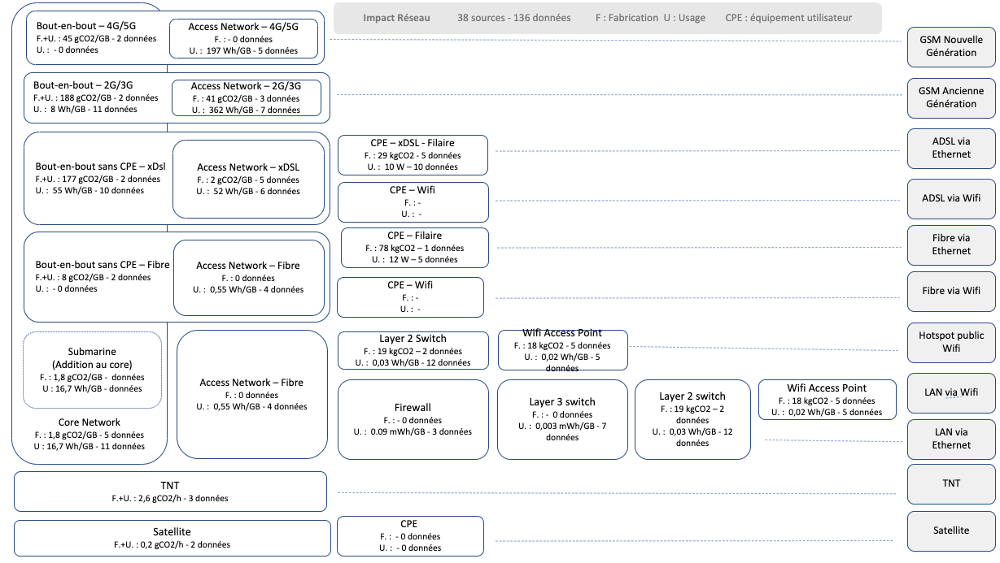
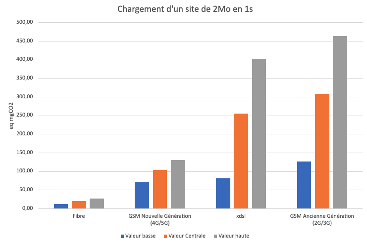
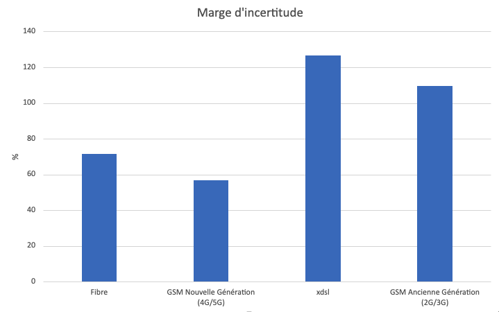
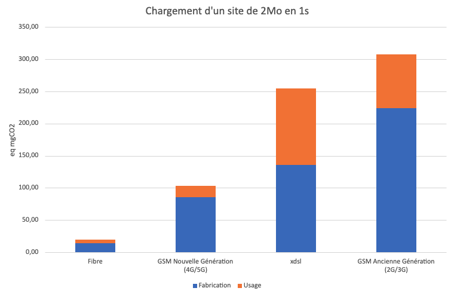
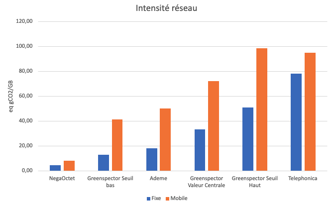
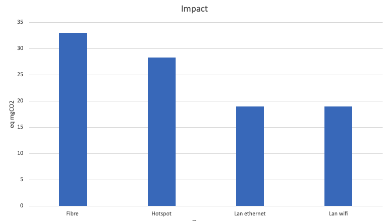
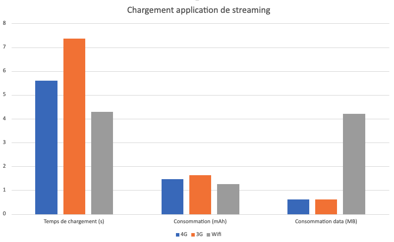
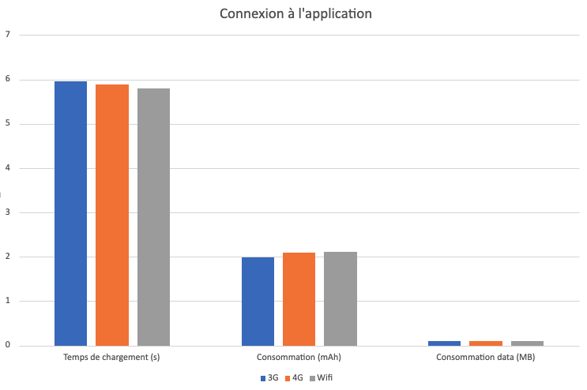

D’après l’étude ADEME/Arcep de 2022, le réseau en France est responsable de 2 à 14% de l’impact environnemntal des activités numériques. Les réseaux fixes génèrent plus d’impacts que les réseaux mobiles (entre 75% et 90%). Cependant compte tenu de l’usage plus important des réseaux fixes, l’impact unitaire, ramené par exemple à un utilisateur ou à un volume de données échangées est plus faible pour le réseau fixe.
De ce constat, en découlent certaines préconisations encourageant l’usage des réseaux fixes plutôt que les réseaux mobiles. Ceci est en phase avec les préconisations sur les 10 bons gestes pour le télétravail de l’ADEME :
“8. Utiliser le Wifi plutôt que la 4G sur les téléphones portables
Sur votre téléphone portable, utilisez de préférence le Wifi quand vous travaillez à la maison. Il sollicite moins le réseau que la 4G. Vous pouvez aussi utiliser le réseau filaire pour connecter votre ordinateur à votre box.“
Cet impact du réseau se retrouve également dans la loi AGEC. Les opérateurs de communication doivent en effet afficher le coût EqCO₂ lié à la consommation par l’utilisateur.
Evaluation du réseau dans le cas de services numériques
Quand il s’agit d’évaluer les impacts environnementaux d’un service numérique, la prise en compte du réseau est nécessaire. L’approche communément utilisée est l’usage de l’intensité en gEqCO₂/Go (équivalent CO₂ par gigaoctet échangées). Cela part de l’hypothèse d’une linéarité entre l’impact CO₂ et les données échangées.
Note : Cette approche est malgré l’usage commun, critiquée. En effet, la réalité d’un réseau est qu’il existe une consommation constante d’énergie, consommation qui n’est pas dépendante des données qui transitent. Cependant l’approche d’intensité est applicable car on a une nécessité d’allouer cette énergie existante. De plus l’impact de fabrication doit aussi être réparti en fonction de l’usage. Une autre méthodologie d’allocation par temps d’usage serait préférable. Ceci nécessite cependant des données plus précises pour chaque partie du réseau. Une affectation par abonné est aussi possible, cependant cette métrique est très peu adaptée à la granularité d’un service numérique unitaire.
Cette méthodologie comptable de l’impact permet de prendre en compte l’effet de seuil qui est induit par une augmentation des infrastructures et de leurs usages si le volume augmente dans sa globalité (nouveaux matériels, dimensionnements plus importants en matériel et électricité pour l’alimenter).
Pour certaines parties comme la box de l’utilisateur, nous avons utilisé une méthode d’allocation temporelle et non basée sur l’intensité.
Lors de l’évaluation du service numérique, il est aussi nécessaire d’avoir un détail entre les différentes connexions (Wifi, 4G…)
À travers le rapport de la loi AGEC, nous avons deux métriques intéressantes :
- 50 gEqCO₂ / Go pour les réseaux mobiles
- 18 gEqCO₂ / Go pour le réseaux fixes
Les hypothèses associées ne sont cependant pas assez explicitées. En effet, l’impact du réseau va dépendre de nombreux éléments et hypothèses :
- Scope pris en compte (Scope 3 en prenant en compte les opérations de l’opérateur réseau)
- Fabrication du matériel ou non
- Prise en compte de la box de l’utilisateur
- …
Si on regarde d’autres sources utilisables directement, Il n’y a pas plus d’information. Par exemple, la base ADEME contient les données Negaoctet et en particulier deux métriques sur le mobile et le fixe :
“Fixed-line network; at consumer; xDSL, FFTx average mix; . Les données proviennent de l’installation des équipements et de la consommation d’énergie de 2020 – (…) Sources : French operators, ARCEP, ICT report: European Commission, ICT Impact study, (…), IEA-4E, (…)”
Même si sourcé, aucune information ne permet d’analyser les données. D’autant plus qu’il est nécessaire quand on veut analyser l’impact du numérique précisément. C’est le cas de la méthodologie Greenspector.
Analyse des données du marché
Afin d’apporter plus de précisions à nos évaluations, nous avons réalisé un travail de R&D pour avoir des facteurs d’émission plus fiables.
Nous avons modélisé le réseau en plusieurs tiers :
- Le cœur de réseau (backbone) qui assure l’interconnexion du réseau
- Le réseau d’accès, plus proche de l’utilisateur avec des architectures spécifiques à chaque type de connexion (3G,Fibre…)
- Le CPE (Customer Premise Equipement), principalement la box chez l’utilisateur
Nous avons écarté le terminal utilisateur de la modélisation. Nous verrons en fin d’article comment le traiter spécifiquement.
Pour les types d’accès, nous avons regroupé :
- Filaire Fibre
- Filaire Cuivre (xDSL)
- GSM “Ancienne génération” (2G et 3G)
- GSP “Nouvelle génération” (4G et 5G)
- Wifi Public (hotspot)
- Lan d’entreprise en Wifi
- Lan d’entreprise en Ethernet
Il serait intéressant de descendre plus dans le regroupement (par exemple séparer 4G et 5G) cependant ce regroupement est adapté à la granularité des données disponibles.
Nous avons analysé 35 sources publiques (Rapport RSE opérateurs, papier scientifique, données constructeurs). Chaque donnée identifiée dans les documents a été classée par rapport aux 7 types d’accès, au tiers du réseau, au scope pris en compte (Fabrication/Usage en particulier). 169 données ont été identifiées. Nous en avons retenu 145 (certaines données ne semblaient pas pertinentes).
La qualité de chaque donnée a été qualifiée selon notre méthodologie. 39 paramètres ont été ainsi qualifié (Cœur de réseau Usage, Cœur de réseau fabrication…) avec un format compatible avec notre méthodologie (Trapèze de détermination utilisable en logique floue). Par exemple pour l’impact d’usage du réseau d’accès fibre, nous avons les valeurs suivantes : 0,1293 / 0,3181 / 0,7891 / 1,9415. Ce qui veut dire que l’impact du réseau d’accès fibre, selon la bibliographie est probablement entre 0,3 et 0,78 Wh/GB.
Au final, on peut représenter le modèle de la manière suivante :

Ce modèle peut être utilisé dynamiquement en précisant certains paramètres : durée de vie des CPE, mix énergétique… Notre API traite cela automatiquement.
Quel est l’impact probable de chaque réseau ?
En prenant l’unité fonctionnelle “Charger un site de 2 Mo en 1 seconde”, nous obtenons un impact Carbone du réseau suivant :

La fibre est largement moins impactante que les autres types d’accès. Le classement 4G/5G devant l’ADSL semble contre-intuitif, surtout par rapport aux messages que l’on entend régulièrement : « Privilégiez la connexion Filaire à la 4G » comme cité plus haut. Ces affirmations sont fausses pour différentes raisons :
- L’impact des antennes de base et du réseau d’accès des anciennes technologies GSM est effectivement plus consommatrice. Les chiffres des anciennes études sont basés sur ces constats. Il est important d’adapter les préconisations en fonction des technologies et de l’âge des études.
- Certaines études parlent de l’impact du réseau sur le terminal. Par exemple la documentation Eco-index annonce “(…)une connexion 4G nécessite jusqu’à 23 fois plus d’énergie pour transporter la même quantité de données qu’une connexion ADSL. (..)” Or la source utilisée est une étude sur l’impact de la connexion LTE sur des smartphones au niveau cellules. Nous reviendrons plus loin sur la réalité sur le smartphone.
On peut observer des marges d’incertitudes pour les réseaux XDSL et GSM ancienne génération :

Ceci provient d’une part des données d’études plus anciennes (et donc pondérées par notre algorithme) et d’autre part par une diversité de technologies plus importantes.
La part de fabrication est variable en fonction des technologies :

On peut noter une amélioration de l’efficience énergétique des réseaux nouvelles générations, c’est en effet un argument largement cité pour promouvoir les nouvelles architectures.
Analyse critique des données d’impact du réseau
- Malgré le modèle qui prend en compte un tri et une qualification des données, le scope de toutes les données n’est pas identifié. On peut trouver des chiffres avec l’impact de fabrication “brute” et potentiellement d’autres avec le scope 3 de l’opérateur (L’impact des bureaux, entre autres de l’opérateur). Ceci est pris en compte dans le modèle via les marges d’incertitude.
- Le modèle d’intensité du réseau en EqCO₂/GB est utilisé. Il n’est pas totalement représentatif de la réalité. Afin d’améliorer la représentativité, il faudrait plus de source pour avoir une allocation temporelle (Débit des réseaux, consommation par utilisateur…). Nous avons commencé à passer certaines métriques comme les données Box avec ce mode d’allocation.
- Il existe des éléments communs entre les réseaux, et parfois spécifique. Par exemple il y a des éléments backbones spécifiques pour la 5G. Il serait nécessaire de prendre cela en compte.
- Même si nous avons un niveau de granularité permettant de prendre en compte le mix énergétique dynamiquement, certaines données intègrent certaines des mix de pays différents. Ce qui pour certaines données, surestime potentiellement la valeur.
Nous avons comparé nos métriques avec d’autres données du marché (pour 1GB).

Les valeurs Greenspector sont supérieures aux valeurs NegaOctet et Ademe (Les valeurs ARCEP/ADEME sont cependant supérieures au seuil bas Greenspector). Les données Telefonica sont supérieures (pour le fixe) au seuil haut de Greenspector (et identiques pour le mobile).
Cette différence s’explique probablement par le fait que nous avons intégré de nombreuses valeurs de fabrication du réseau. Une deuxième explication est peut-être une sous-estimation des valeurs pour la France qui positionne ses chiffres dans un seuil bas. Sans entrer dans un débat, ces chiffres sur l’impact du réseau sont souvent surveillés, la tendance est peut-être à la sous-estimation des chiffres plus qu’à la surestimation !
Spécificité
Est-ce que les connexions autres qu’une box d’un particulier sont plus sobres ?

Oui, ceci s’explique par le fait que ce type d’architecture est plus mutualisée. D’une part le matériel a une capacité de bande passante plus importante, donc une allocation par donnée échangée plus faible et d’autre part un impact de fabrication relative faible (pour la capacité).
A noter on retrouve un impact un peu plus élevé du wifi que de l’éthernet. On retrouve cela sur les box (par exemple +3 Wh/h en plus sur une box orange).
Impact du réseau sur le terminal
Nous mesurons les applications mobiles et sites web tous les jours pour nos clients, nous traitons donc de l’impact du réseau sur le terminal et surtout sur le logiciel. Ce que l’on peut dire “à dire d’expert” mais basé sur des mesures, c’est que l’impact des réseaux GSM n’est pas 23 fois plus important, ni 10 fois plus.
Voici quelques données de mesures sur une application de streaming (uniquement le lancement et la connexion à l’application, pas le streaming en lui-même) :


On le voit pour la connexion (2ème graphique), il y a quelques données (~700 KB) et la consommation est quasiment la même, voire légèrement supérieure pour la connexion Wifi.
Pour le chargement de l’application (1er graphique), le Wifi est légèrement moins consommateur. On observe cependant une consommation importante de données (4MB vs 600kB). Ceci s’explique par un comportement différent de l’application en Wifi (chargement de données en plus si connexion Wifi). On voit ici un impact important sur le temps de chargement (passage de 4s à 7s pour la 3G).
Le réseau va au final avoir un impact, cependant il n’existe pas de règle figée :
- Si l’application adapte son comportement au type de connexion et à la vitesse, alors on aura potentiellement plus de données chargées sur les connexions avec plus de débit. Et aussi potentiellement plus de CPU pour traiter ces données
- Pour des connexions type 3G/2G, le temps de chargement sera potentiellement plus long (parfois x2 voir x3)
- En fonction du regroupement ou non des requêtes, l’impact des réseaux GSM va être plus ou moins important
Il est nécessaire de mesurer l’application au final pour comprendre son comportement par rapport au réseau. Mettre en place des règles d’estimation dans les modèles est donc complexe et va amener des données incertaines et probablement fausses.
Conclusion
L’évaluation de l’impact environnemental du réseau est complexe. Il est nécessaire d’avoir plus de données des opérateurs et des constructeurs. Ces données doivent être plus fines et plus transparentes. Cependant les données existantes sont utilisables, encore faut-il bien les qualifier et les utiliser. Compte-tenu de ces constats, l’usage de données moyennées n’est pas une approche idéale. C’est pour cela que nous avons adopté une approche avec calcul des incertitudes. Dès qu’on peut, il faut mesurer pour avoir des données contextualisées et plus précises. C’est l’approche que nous appliquons. Ceci apporte des précisions importantes lors des ICV (l’inventaire du Cycle de Vie dans la démarche d’évaluation de ce dernier), des évaluations d’impacts du numérique, ou plus unitairement de l’évaluation de logiciel.